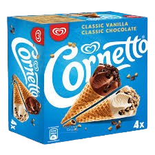

A história do Cornetto
A história do Cornetto começou na Itália, no ano de 1959, graças à genialidade de um fabricante napolitano de sorvetes chamado Spica. Naquela época, o grande desafio de vender sorvetes em casquinhas pré-embaladas era que a umidade do sorvete rapidamente deixava o wafer murcho e sem graça. Para resolver esse problema estrutural, Spica desenvolveu uma técnica inovadora que consistia em isolar o interior da casquinha com uma mistura de óleo, açúcar e uma generosa camada de chocolate. Essa invenção brilhante não apenas manteve o cone crocante por muito mais tempo, mas também acabou criando a famosa e adorada "pontinha de chocolate" no final do sorvete. O nome "Cornetto" foi escolhido justamente por significar "pequeno chifre" em italiano, fazendo uma alusão direta ao formato icônico do cone. Apesar da excelente invenção, o produto teve um início relativamente modesto no mercado local até o ano de 1976, quando a gigante multinacional Unilever adquiriu a patente e a empresa Spica. Com o poderoso alcance de distribuição e o forte aparato de marketing da multinacional, o Cornetto foi lançado em grande escala em toda a Europa e, logo em seguida, no resto do mundo. A marca investiu pesadamente em campanhas publicitárias memoráveis ao longo das décadas, frequentemente associando o consumo do sorvete ao romance, à juventude e ao verão europeu, o que consolidou sua imagem na cultura pop. Hoje, o Cornetto é um dos sorvetes mais consumidos e reconhecidos do planeta, sendo comercializado sob o guarda-chuva da "marca do coração" da Unilever (conhecida como Kibon no Brasil, Algida na Itália e Wall's no Reino Unido), mantendo sempre a tradição da casquinha crocante que revolucionou a indústria de sobremesas.
